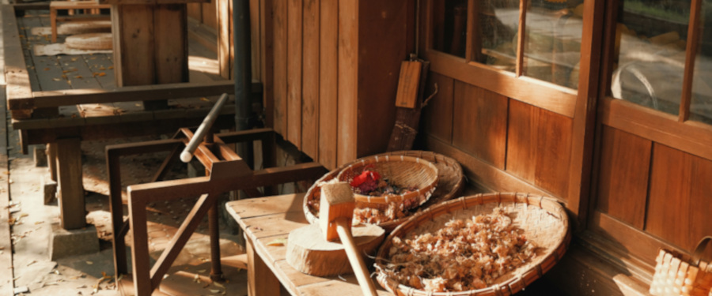

🎨 Arte & Charme 🎁

Na Arte & Charme, cada criação é feita com as mãos e o coração! ✨ Acreditamos que o artesanal tem uma magia única: cada detalhe, cada acabamento e cada toque especial carrega histórias e sentimentos que tornam cada peça exclusiva. Nosso trabalho é transformar materiais simples em produtos cheios de vida, beleza e personalidade, sempre valorizando o cuidado e a dedicação por trás de cada processo. Aqui, você encontra muito mais do que objetos — encontra arte feita com amor, leveza, alegria e muito encanto. 💛
Nossos Produtos
Glossário da Artesã
- Ponto-Cruz
- Técnica de bordado feita em tecido de tramas bem definidas, onde os fios são cruzados em formato de “X”. Muito usada em toalhas, panos de prato e quadros decorativos.
- Macramê
- Arte de criar peças a partir de nós, sem uso de agulhas ou máquinas. Pode ser usada para fazer painéis decorativos, suportes de plantas, bolsas e bijuterias
- Crochê
- Técnica artesanal feita com agulha específica e fios, criando peças como roupas, acessórios e itens decorativos.
- Tricô
- Arte de entrelaçar fios com duas agulhas, resultando em tecidos mais flexíveis, ideais para roupas de inverno.
Arte & Charme 2025 © Todos os direitos reservados